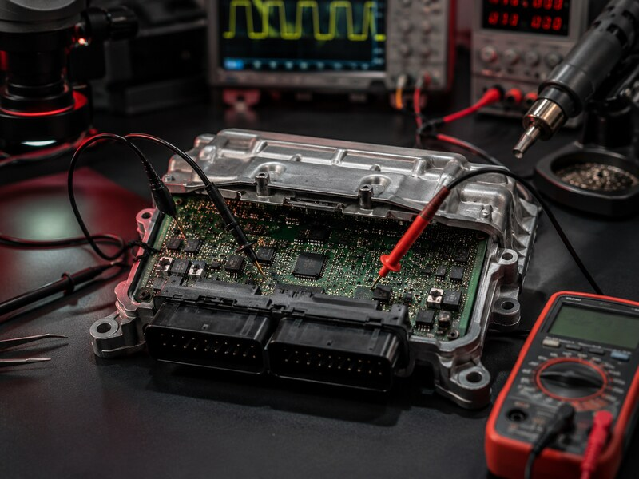

ECU y módulos para maquinaria agrícola e industrial
Revisamos centralitas y unidades electrónicas de tractores, maquinaria de obra, vehículos industriales y equipos especializados. Antes de enviar nada comprobamos referencia, síntomas, alimentación y antecedentes de la unidad.

Electrónica que inmoviliza una máquina o impide trabajar
Atendemos cada caso por referencia. Una misma máquina puede montar hardware y software diferentes según año, motorización y fabricante, por lo que no confirmamos una intervención sin identificar primero la unidad.
Fallo de comunicación, recuperación, reparación o clonación.
Unidades de cambio y control electrónico según referencia.
Unidades de carrocería, confort, instrumentación y sistemas auxiliares.
Valoración de recuperación de datos y comunicación en banco.
Primero identificamos; después confirmamos el trabajo
Datos de la máquina
Marca, modelo, año, motor, referencia de la unidad y códigos de avería.
Fotografías y síntomas
Etiqueta completa, conectores, estado exterior y descripción de lo ocurrido.
Confirmación del envío
Indicamos qué unidad, llaves o donante necesitamos y cómo debe embalarse.
Laboratorio y presupuesto
Diagnosticamos la unidad y confirmamos viabilidad, precio y plazo antes de reparar.
Evita desplazar la máquina completa
En muchos trabajos podemos recibir únicamente la unidad electrónica. Si el proceso exige comprobaciones en el vehículo o información adicional, te lo indicaremos antes de que desmontes o envíes material.
Abre el caso con la referencia
Adjunta fotografías de la etiqueta, los DTC y una descripción clara del fallo. También puedes solicitar que gestionemos la recogida del paquete.
Antes de enviar una unidad
¿Trabajáis únicamente con tractores?
No. Revisamos referencias de maquinaria agrícola, vehículos industriales, maquinaria de obra y otros equipos especializados.
¿Debo enviar la máquina completa?
Normalmente se valora primero la unidad electrónica, pero depende del sistema y de las comprobaciones necesarias. Confirma el caso antes de desmontar.
¿Necesitáis una centralita donante?
Solo cuando el procedimiento lo requiera. No envíes donantes, llaves o módulos adicionales hasta que confirmemos compatibilidad y material necesario.
¿El precio es fijo?
No en todos los casos. Se confirma según referencia, estado, protección y trabajo necesario antes de realizar la reparación.